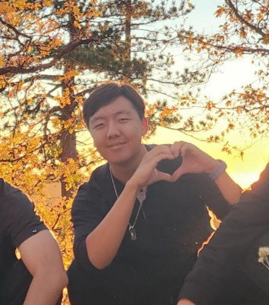

Justin Kim

Education
University of California-Santa Barbara
Expected Graduation: June 2024
- B.S. Statistics and Data Science | College of Letters and Science
- Minor in Mathematics | College of Letters and Science
Los Osos High School
2016 - 2020
- Golden State Seal Merit Diploma
- California State Seal of Biliteracy
- California Scholarship Federation Golden Seal
Experience
Student Data Scientist/Researcher at Caves Laboratory
2022 - 2023
- Clean, organize, and prepare data for statistical analysis/machine learning
- Successfully optimized machine learning models for predicting biological data
- Developed management and communication skills in a high-pressure working environment
Competitive Behavior of Male Swordtails
2022 - 2023
- Cleaned research data on Male Swordtail fish from Caves Laboratory
- Used Resampling, Multi-Linear Regression, Polynomial Regression, Elastic Net Regression, KNN analysis, and Random Forest Ensembles
in RStudio to train and tune the best model fit for predicting subject behavior
- Utilized Analysis of Variance procedures to determine best predictor variables for competitive behaviorisms.
- Efficiently collaborated with leading professor and lab director to resolve analytical and lab-motive conflicts
- Applied principles of Experimental Design and Thinking to ensure valid analysis and established a data pipeline
George Mason University & Smithsonian Environmental Research Center
July 2019
- Analyzed real-world conservational data on habitat destruction and energy scarcity
- Utilized big data to propose and design appropriate solutions.
- Effectively realized and introduced conservational solutions through computational projects
Skills & Interests
Skills: Github & Parallel Computing, Communication, Collaboration, Critical Thinking, Design Thinking, Team Player
Coding Languages: Python, SQL, R, JavaScript, HTML, CSS
Spoken Languages: English, Korean, French
Interests: Reading, Calligraphy, Piano (composing), Music Production, Golf, Chess, Table-Top, Video Games, and Tennis